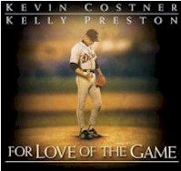
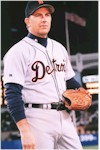

Contents | Features | Reviews | Books | Archives | Store |
 |
|
| Movie Credits | Buy It! |
For Love of the Game
Review by
Sean Axmaker
Posted 17 September 1999
|  |
Directed
by Sam Raimi Starring
Kevin Costner, Written
by Dana Stevens |
I
don’t like baseball, but I love baseball films. The former is simply a matter
of taste -- I prefer the tactical teamwork, speed, and sustained energy of ice
hockey and basketball -- but the latter is intrinsic to the sport. Hockey and
basketball are too fast and furious for movies to allow personal stories to
emerge and interpersonal conflicts to play out; directors resort to slow motion
or one-on-one situations for individual achievement. Despite all the hot-dogging
in the world, they are team sports and every win is a result of every member
forgoing individuality to click as a unit. But baseball is made for the cinema,
spread out, easy to follow, and paced perfectly for the cinema, series of
confrontations with every pitch: tension and release, repeated for nine innings.
Every play is an opportunity for a drama between two people that transforms into
a team effort, and vice versa. Individualism and community all rolled into one.
Does it get any more American?
It
does in For Love of the Game, Sam
Raimi’s almost unforgivably schmaltzy love-letter to the game, or rather to
the ideals of the game. Kevin Costner, starring in his third baseball movie (to
paraphrase Saturday Night Live’s Garret Morris, baseball has been good to
him), plays aging pitcher Billy Chapel, a 19 year vet of the Detroit Tigers. It’s
been a bad season and they limp to the final game of regular season play where
an anxious New York Yankees needs a win to clinch the pennant. Billy’s arm is
hurting but only his lovable mug of a catcher Gus (John C. Reilly) knows. The
night before the game he’s stood up on his big romantic evening with lady love
Jane (Kelly Preston), the woman he hopes to make up with. Instead she gives him
the kiss off the next day. He finds out from the fatherly team owner Gary
Wheeler (Brian Cox), who Billy still addresses with a respectful “Mr.,” that
the club that’s been his home for years is about to be sold to corporate
interests, and their first plan is to trade Billy to the Giants. “I’ve
always been a Tiger” Billy mutters as much to himself as to Wheeler, who
suggests it might be a good time for him to retire. “The game stinks and I
can’t be a part of it anymore,” confesses Wheeler. That rouses Billy who, in
his best boy scout sincerity, answers back “The game doesn’t stink, Mr.
Wheeler. It’s a great game.”
And
thus we lead into the Big Game, which is less about two teams confronting one
another as an aging veteran proving to the world -- and himself -- that he still
has it, a team recovering its self respect and pulling together into “the best
team in baseball right now,” and ultimately the ideal of the game versus the
corporate shenanigans that have turned America’s pastime into a business. In
the grand scheme of things this game may mean nothing for the Tigers but it
means the world for the Yankees and Billy isn’t about to give it to them.
Wound up with disappointment and frustration, Billy (who has to make up his mind
whether to retire or accept the trade by the end of the game -- don’t ask me
why) huddles with his catcher. “Today I’m throwing hard, Gus.” “You and
me, one more time?” Billy smiles. “Why not?” Pitching like he’s atomic
powered, he not only keeps the Yankees scoreless for innings but he keeps them
off base. Though the rest of the team sees it halfway through the game, it
isn’t until the seventh inning that Billy looks up to the scoreboard to see
the row of zeroes: he’s on the verge of a perfect game.
That’s
the baseball story. The other story is nestled in massive chunks of flashbacks
as Billy (who has been shocked into a sudden reflective mode) ruminates over his
life, notably his relationship with Jane over the past five years, and how his
life of sacrifice -- everything for the game --has left his personal life an
afterthought. The on-again, off-again relationship begins as a one night stand
and cracks when his tunnel-visioned efforts to recover from a freak buzz-saw
accident (I’m still not sure how it happened) drives away everyone close to
him. “Call Mike. He’s the most important person for me right now,” he
hollers to his panicked lover, who looks as if she’s just had the floor drop
from under her, but it’s just the beginning. Boy scout turns into bullying
bastard as he drives everyone away -- especially Jane -- in his relentless,
take-no-prisoners recuperation. Her parting words come back to him in the final
moments of the game: “You don’t need me. You and the ball and the diamond.
You’re perfect. A perfectly beautiful thing. You can win the game all by
yourself.
Well
of course we all learn a little something here, and once again baseball becomes
Billy’s school of life: he can’t win it by himself, but maybe he can with a
little help from his friends. As his exhausted arm goes from sore to numb and
his level of concentration flags under the pain the team rouses to life, playing
better than ever before. With the possibility of a perfect game dangling in
front of them they play with a passion of paradise rediscovered: baseball is the field of life and
these guys suddenly feel like champions. Okay, it’s not deep, but it is
invigorating. Even a non-baseball fan like me can get caught up in the
excitement, the drama, the sheer beauty of athletic dives and bullet throws and
precision teamwork.
I
can’t say the same about the life off the field. Costner’s Billy is a man
who plays at life, but lives the American sports dream to the fullest. He’s a
baseball legend, a hero to millions, who has focused every element of his life
into the sport. “You ever had your heart broken?” asks Jane. Billy’s
answer: “Yes, when we lost the pennant in 1987.” It’s
a loaded line, obviously, there to prove to us that Billy has never been fully
engaged in anything outside of the game, but the problem is that the film
isn’t either. Sam Raimi, who is a baseball nut himself, brings his own
infectious love of the game to the baseball scenes. The romance, the adult
relationship, gets second shrift. Kelly Preston’s Jane is rather blank -- when
she trots a surprise almost halfway through the film involving a rather
substantial part of her life and her lifestyle, it takes us all aback. The point
is how little Billy really knows about her, but it winds up telling us how
little we know her as well. It’s hard to care about an affair that simply
stands in for an idea of grown-up love. Just because Billy’s an arrested
adolescent is no reason for us to see Jane an idealized modern woman fantasy:
pretty, available, and self-sacrificing… to a point.
The
script, by Dana Stevens (who reworked Wings
of Desire as the emotionally rich City
of Angels) is much more connected with the guy world of teamwork and the
buddy system. John C. Reilly, with his hound dog face and regular Joe speech, is
the working class schmoe to Costner’s sports royalty but together they are an
inseparable duo, to the point that Billy throws his weight around (a rare thing
for this team player) to ensure his catcher will be working with him in this
game. “Gus catches or I don’t pitch.” Billy himself is an idealized figure
(“You’re like the old guys,” remarks one team trainer, harkening back to
the “innocent days of the game) and Costner’ plays the boy scout of a
baseball hero as more aw-shucks than knowing pro, more Field
of Dream-er than Bull Durham
roustabout. Loyal to one team his entire career, he reminds us of a time before
free agents and club-hopping and franchises moving all across the country under
the control of corporate interests.
For
Love of the Game
is an odd and ultimately unsatisfying mix of sport myth and romantic melodrama,
like a desperate attempt to make a baseball films that girls can enjoy. But Pride
of the Yankees it ain’t. Too long at 137 minutes and too insincere in
it’s love story, Sam Raimi only proves one thing. Despite years of inventive,
exhilarating genre films and a marvelously pitched character thriller, he can
make a Hollywood film as bland as everyone else. It’s not the proof I was
looking for.
Contents | Features | Reviews
| Books | Archives | Store
Copyright © 1999 by Nitrate Productions, Inc. All
Rights Reserved.